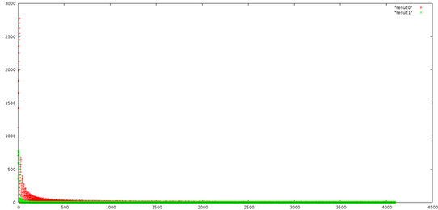

ln函数的C语言函数定点实现和线性插值的实现方法
ln函数比较消耗计算资源，在底层开发时一般不会直接进行计算，或者也没有函数库实现，定点运算的具体实现方法上一般有两种：
- 查找表 + 线性插值
- 幂次展开
第一种方法比较通用，可以用在一些非线性曲线的拟合，比如在NTC电阻的运算上面，第二种方法比较精确，也可以按照需要选择相应的幂次进行运算，但运算复杂度相对较高。其他定点算法更为复杂，有些还要看下相关的paper。这里主要针对第一种方法进行介绍。
查找表
查找表是底软开发的基本算法，可以根据输入值进行查表直接得到结果，比如I2C进行PEC计算的时候，或者比如NTC电阻应用上。假如使用8bitADC进行温度检测，可以将采样得到的数值作为查找表的index，得到相应的温度数值。比如
typedef signed char int8;
typedef unsigned char Uint8;
int8 get_temp_from_ntc(const Uint8 adc)
{
static const int8 NTC_LUT[256] = {
-13, -6, -2, 1, 3, 5, 7, 8, 9, 10,
11, 12, 13, 14, 14, 15, 16, 16, 17, 17,
18, 18, 19, 19, 19, 20, 20, 21, 21, 21,
22, 22, 22, 22, 23, 23, 23, 24, 24, 24,
24, 25, 25, 25, 25, 26, 26, 26, 26, 26,
27, 27, 27, 27, 27, 27, 28, 28, 28, 28,
28, 28, 29, 29, 29, 29, 29, 29, 30, 30,
30, 30, 30, 30, 30, 31, 31, 31, 31, 31,
31, 31, 31, 32, 32, 32, 32, 32, 32, 32,
32, 32, 33, 33, 33, 33, 33, 33, 33, 33,
33, 33, 34, 34, 34, 34, 34, 34, 34, 34,
34, 34, 34, 35, 35, 35, 35, 35, 35, 35,
35, 35, 35, 35, 36, 36, 36, 36, 36, 36,
36, 36, 36, 36, 36, 36, 36, 36, 37, 37,
37, 37, 37, 37, 37, 37, 37, 37, 37, 37,
37, 37, 38, 38, 38, 38, 38, 38, 38, 38,
38, 38, 38, 38, 38, 38, 38, 38, 39, 39,
39, 39, 39, 39, 39, 39, 39, 39, 39, 39,
39, 39, 39, 39, 39, 39, 40, 40, 40, 40,
40, 40, 40, 40, 40, 40, 40, 40, 40, 40,
40, 40, 40, 40, 40, 41, 41, 41, 41, 41,
41, 41, 41, 41, 41, 41, 41, 41, 41, 41,
41, 41, 41, 41, 41, 41, 41, 42, 42, 42,
42, 42, 42, 42, 42, 42, 42, 42, 42, 42,
42, 42, 42, 42, 42, 42, 42, 42, 42, 42,
42, 43, 43, 43, 43
};
return NTC_LUT[adc];
}
- 这里的查找表需要根据实际计算得到，这里只是举个例子，实际可能不需要这么大， 可以根据温度范围和实际计算结果进行删减
- static主要是为了防止每次进入函数都要在栈里面开辟空间，在某些CPU甚至要设置 __FLASH，让这个表置于Flash而不是RAM区
- const表示这个表是只读的，防止意外修改
- int8使用8bit定义是为了尽量充分利用存储空间
如果对于ln函数，非线性的斜率较大，如果只是采用查找表会有比较大的误差，因而需要在表中相邻的两个点进行线性插值。
线性插值
接着上面的例子，如果ADC扩展到12bit，直接进行查找表需要2048B，扩大查找表需要较多的存储空间，一般无法满足。因而可以用前8bit进行查找表运算，后面4个bit进行线性差值，这样可以达到较好的拟合效果。
return (lut[index] + (adc - index * 16) * (lut[index + 1] - lut[index])/16);
这里的lut就是对应温度的查找表，加上后面一部分线性插值的结果，index代表前8bit数据，查找表的效果可以从下图（使用gnuplot）的对比上看出来，红色点代表直接使用查找表与浮点值的偏差，绿色点表示加上线性插值的结果。可以看出加上插值后，偏差值明显减小。

blog comments powered by Disqus
介一个IT民工甲，Firmware，嵌入式，数字电源，伪Geek，
80后伪奋青，Canon 450D，Arch Linux，Kindle，一介书生
www.jieyige.com